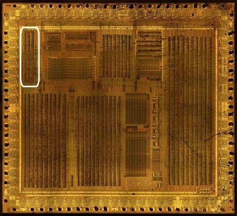
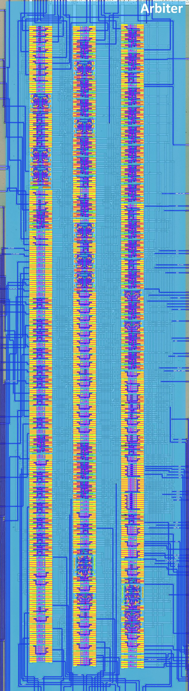
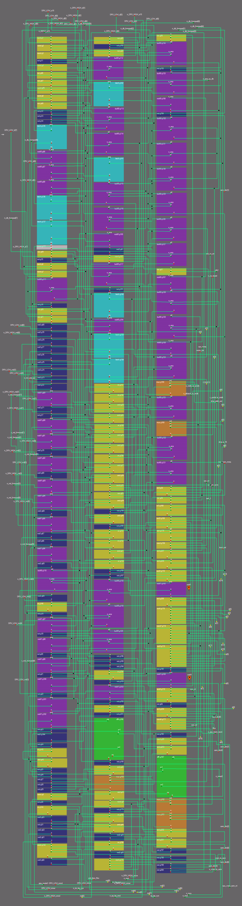
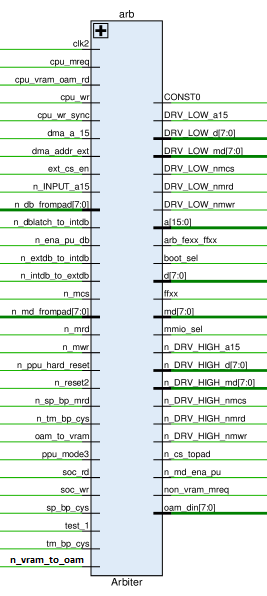
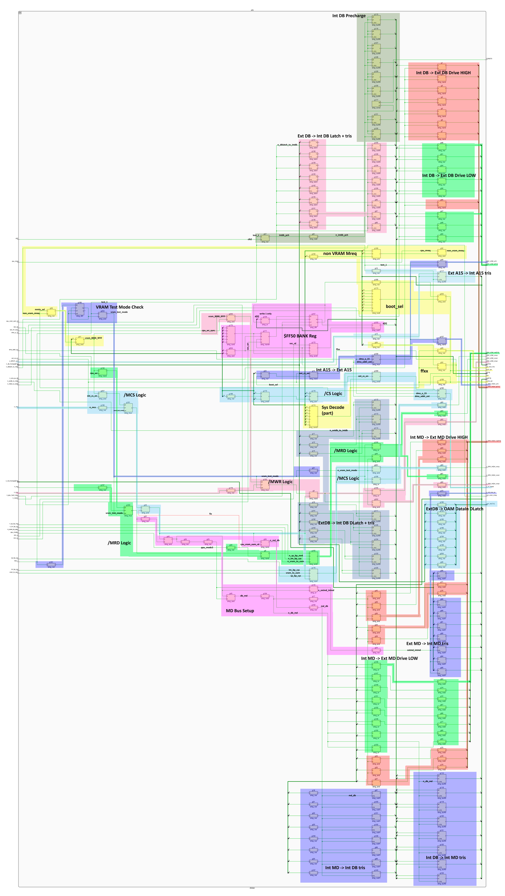

Arbiter
The section is under development and requires refinement, the schematics have not been verified in the simulator, but the study has gained "critical mass"

 |
 |
|---|---|
The module is a classic bus arbiter, which can often be found in older chips. It is responsible for connecting external and internal buses to each other, in various combinations.
It also contains a piece of arbitration for a[15]. 1
To familiarize yourself with the architecture, it's best to crawl through the annotated design, everything is quite obvious there. Sys Decode (address space decoder) parts, which are included in this module and output a number of signals for other parts of the chip, look a bit complicated. And the combo circuits for forming /CS, /MCS, /MWR and /MRD are of course also complicated (a lot of non-obvious signals form the combinatorial tree).
Signals

The signal table is derived from the netlist.
| Signal Name | Direction | From / Where To | Description |
|---|---|---|---|
clk2 |
Input | From ClkGen | Clock signal for the module (is used for Internal DB Precharge) |
n_reset2 |
Input | From ClkGen | Global Active-low reset signal. |
cpu_mreq |
Input | From Core | CPU memory request signal. |
ext_cs_en |
Input | From ClkGen | External chip select enable signal. |
cpu_wr_sync |
Input | From ClkGen | Synchronized CPU write signal. |
a |
Bidir | Global | Address bus (16-bit). a[15] is bidirectional, a[14:0] are inputs. |
d |
Bidir | Global | Internal Data bus (8-bit). |
cpu_wr |
Input | From Core | CPU write signal. |
mmio_sel |
Output | To Core | Memory-mapped I/O select signal (MMIO_REQ). |
boot_sel |
Output | To Core | Boot select signal (IPL_REQ). |
n_DRV_HIGH_a15 |
Output | To A15 Pad | Active-low drive high signal for a[15]. |
n_INPUT_a15 |
Input | From A15 Pad | Active-low input signal for a[15]. |
DRV_LOW_a15 |
Output | To A15 Pad | Drive low signal for a[15]. |
n_cs_topad |
Output | To /CS Pad | Active-low chip select to pad signal. |
CONST0 |
Bidir | Global | Constant 0 signal. 2 |
n_DRV_HIGH_nmwr |
Output | To /MWR Pad | Active-low drive high signal for n_mwr. |
n_mwr |
Input | From /MWR Pad | Active-low memory write signal. |
DRV_LOW_nmwr |
Output | To /MWR Pad | Drive low signal for n_mwr. |
n_DRV_HIGH_nmrd |
Output | To /MRD Pad | Active-low drive high signal for n_mrd. |
n_mrd |
Input | From /MRD Pad | Active-low memory read signal. |
DRV_LOW_nmrd |
Output | To /MRD Pad | Drive low signal for n_mrd. |
n_DRV_HIGH_nmcs |
Output | To /MCS Pad | Active-low drive high signal for n_mcs. |
n_mcs |
Input | From /MCS Pad | Active-low memory chip select signal. |
DRV_LOW_nmcs |
Output | To /MCS Pad | Drive low signal for n_mcs. |
n_DRV_HIGH_md |
Output | To MD Pads | Active-low drive high signal for md (8-bit). |
n_md_frompad |
Input | From MD Pads | Active-low md input from pad (8-bit). |
DRV_LOW_md |
Output | To MD Pads | Drive low signal for md (8-bit). |
n_md_ena_pu |
Output | To MD Pads | Active-low md enable pull-up signal. |
n_DRV_HIGH_d |
Output | To D Pads | Active-low drive high signal for d (8-bit). |
n_db_frompad |
Input | From D Pads | Active-low data bus input from pad (8-bit). |
DRV_LOW_d |
Output | To D Pads | Drive low signal for d (8-bit). |
n_ena_pu_db |
Input | From MMIO | Active-low enable pull-up signal for data bus. |
soc_wr |
Input | From MMIO | System-on-Chip write signal. |
soc_rd |
Input | From MMIO | System-on-Chip read signal. |
vram_to_oam |
Input | From MMIO | VRAM to OAM transfer signal. |
dma_a_15 |
Input | From MMIO | DMA address bit 15 signal. |
non_vram_mreq |
Output | To MMIO | Non-VRAM memory request signal. |
test_1 |
Input | From MMIO | Test1 mode - disable all internal CPU A/D bus drivers. |
n_extdb_to_intdb |
Input | From MMIO | Active-low external data bus to internal data bus signal. |
n_dblatch_to_intdb |
Input | From MMIO | Active-low data bus latch to internal data bus signal. |
n_intdb_to_extdb |
Input | From MMIO | Active-low internal data bus to external data bus signal. |
ffxx |
Output | To MMIO, HRAM, APU, PPU1 | Signal indicating access to memory range FFxx. |
n_ppu_hard_reset |
Input | From PPU2 | Active-low PPU hard reset signal. |
ppu_mode3 |
Input | From PPU1 | PPU mode 3 signal. |
md |
Bidir | Global | Internal MD bus (8-bit). |
oam_din |
Output | To PPU2 | OAM data input (8-bit). |
n_vram_to_oam |
Input | From PPU2 | 0: VRAM to OAM transfer signal. (active low) |
dma_addr_ext |
Input | From MMIO | DMA external address signal. |
sp_bp_cys |
Input | From PPU1 | Sprite buffer page cycle - bus cycle when the PPU fetches sprite data into its buffer. |
tm_bp_cys |
Input | From PPU1 | Tile map buffer page cycle - bus cycle when the PPU fetches tile map data. |
n_sp_bp_mrd |
Input | From PPU1 | Active-low sprite buffer page memory read. |
n_tm_bp_cys |
Input | From PPU1 | Active-low tile map buffer page cycle. |
arb_fexx_ffxx |
Output | To PPU1 | Arbitration signal for memory ranges FExx and FFxx. |
cpu_vram_oam_rd |
Input | From MMIO | CPU VRAM/OAM read signal. |
Verified behaviour (issue #396, tb_arb all-PASS)
Real Arbiter netlist in HDL/soc/icarus/soc (merged netlist
arb_merged.v). Combines with the real MMIO decode so that CPU accesses
to $FF50 reach the bank register.
- Sys Decode outputs (combinational, with MREQ):
boot_sel= 1 for $0000-$00FF while the BANK register is clear;ffxx= 1 for $FFxx (a[15:8] = 0xFF);mmio_sel= 1 for the $FE00+ (FExx/FFxx) window;-
non_vram_mreq= MREQ & NOT ($8000-$9FFF VRAM window) - i.e. the "non-VRAM" region excludes only the VRAM window, not cart RAM; -
arb_fexx_ffxx= 1 for $FE00+ addresses (FExx vs FFxx arbitration). -
$FF50 BANK register (
g166, dff): a CPU write of 1 disables the internal boot ROM (boot_selgoes 0); the write of 0 afterwards does not re-enable it (write-1-only, matches the wiki). -
Address/data bus role: in normal (non-TEST1) mode the Arbiter only reads a[14:0] and drives nothing on the internal
abus; a[15] is driven (fromn_INPUT_a15pads) only in TEST1 mode; the d-bus precharge driver (clk2=0) and the external-bus direction controls come from MMIO (n_extdb_to_intdb/n_dblatch_to_intdb/n_intdb_to_extdb). -
/CS pad drive (measured, tb_arb PASS):
/CS(internaln_cs_topad, the inverting OBUF in front of the pad) asserts ~2x per CPU read cycle (M-cycle pulses viaext_cs_en) for addresses with a15 & (a13 | a14) - the $A000-$BFFF (cart RAM) and $C000-$FBFF windows; it does not assert for the $0000-$7FFF ROM area, the $8000-$9FFF VRAM window, or $FFxx (the ~(a[15:10]=111111) term kills $FC00+). So this signal is the select for the external RAM / bus- window devices, not for the cart ROM.
Annotated Design

Schematics
- Int DB Precharge: controls the Int DB bus precharge
- Int DB -> Ext DB Driver: connects Int DB to Ext DB
- Ext DB -> Int DB Latch + tris: memorizes the Ext DB value on the latch (DB Latch)
- VRAM Test Mode Check: generates the VRAM Test Mode signal (when VRAM is controlled externally)
- Sys Decode (part): Sys Decode chunks
- Ext A15 -> Int A15 tris: piece of address bus arbitration
- Int A15 -> Ext A15 Driver: piece of address bus arbitration
- /CS Logic
- /MCS Logic
- /MRD Logic
- /MWR Logic
- Ext DB -> Int DB Latch + tris: connects Ext DB to Int DB
- Ext DB -> OAM DataIn DLatch: outputs a value from Ext DB for OAM DataIn
- MD Bus Setup: generates MD bus control signals
- Ext MD -> Int MD tris: connects Ext MD to Int MD
- Int MD -> Ext MD Driver: connects Int MD to Ext MD
- Int MD -> Int DB tris: connects Int MD to Int DB
- Int DB -> Int MD tris: connects Int DB to Int MD
- $FF50 BANK Reg: well-known register to disable mapping of the built-in BootROM (write 1 only)
Map
| Row | Cells |
|---|---|
| 1 | nand, nand, nand, not, nand, nor, nor, nand, nand, nor, not, not, not, latch, notif0, notif0, notif0, latch, latch, const, nor, not, nand, nand, bufif0, not, nor, nor, not2, not2, not2, not2, not2, not2, not2, not2, not2, notif1, not2, not, notif1, notif1, not2, notif1, not2, notif1, notif1, not2, notif1, not2, not2, notif1, not2, bufif0, not2, or, not, notif1, not, notif1, not, notif1, not, notif1, not, notif1, notif1, not, not3, not, or, and, not, not, not, not, not, nand, not, or, not2, not, not2, not2, and4, not2 |
| 2 | nor, not, nor, bufif0, latch, bufif0, bufif0, latch, bufif0, bufif0, notif0, not2, nand, bufif0, not, latch, notif0, latch, latch, or, or, and, and, or, and, and, or, and, and, nand, nor, and, not, and, not, or, or, and, or, not, not, bufif0, bufif0, bufif0, not, not, not, or, not, notif1, not, nor, not, dffr, not, and, mux, and, nand, not, or, and, not2, or, not2, nor4 |
| 3 | nor, bufif0, not, bufif0, notif0, not, bufif0, bufif0, bufif0, bufif0, bufif0, bufif0, nor, notif0, bufif0, bufif0, notif0, bufif0, mux, bufif0, mux, bufif0, bufif0, and, nor, or3, and3, aon, nand, and, and, and3, notif1, and, nor6, nand7, nor8, not, notif1, and4, not, and, nand4, not, nand, and, dffr, mux, mux, and, and, not, not, not, not |
-
The chip is topologically arranged so that the address bus arbitration is divided into three parts: in arb, in mmio, and in apu, to equalize wire lengths. ↩
-
The constant 0 is globally scattered throughout the chip. Each large module with cells has a
constcell whose output 0 is globally connected between all modules (so the input is marked as Bidir). ↩